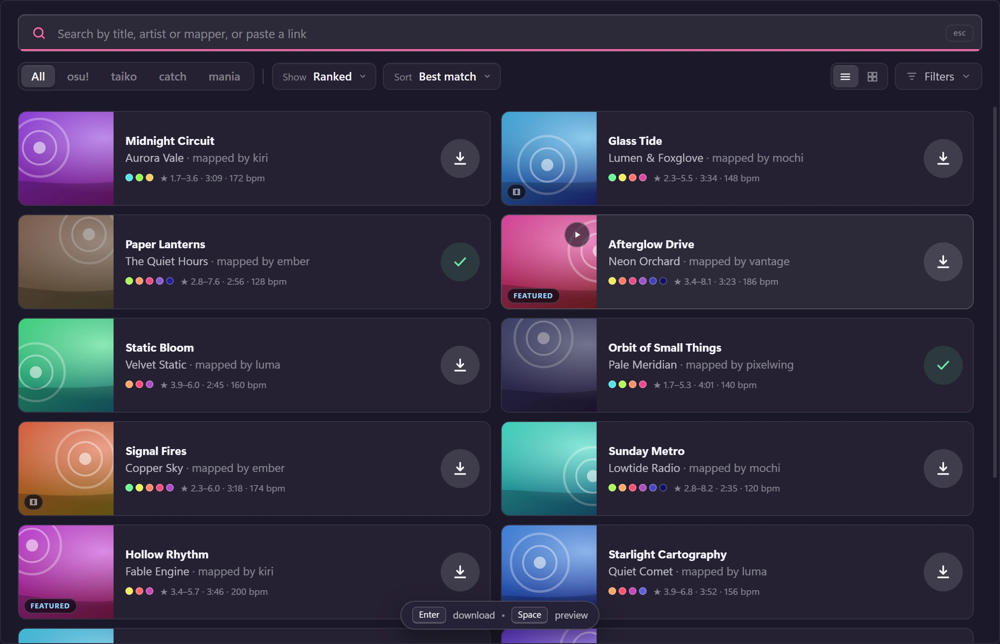
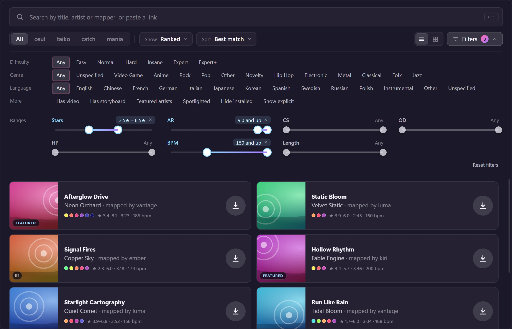
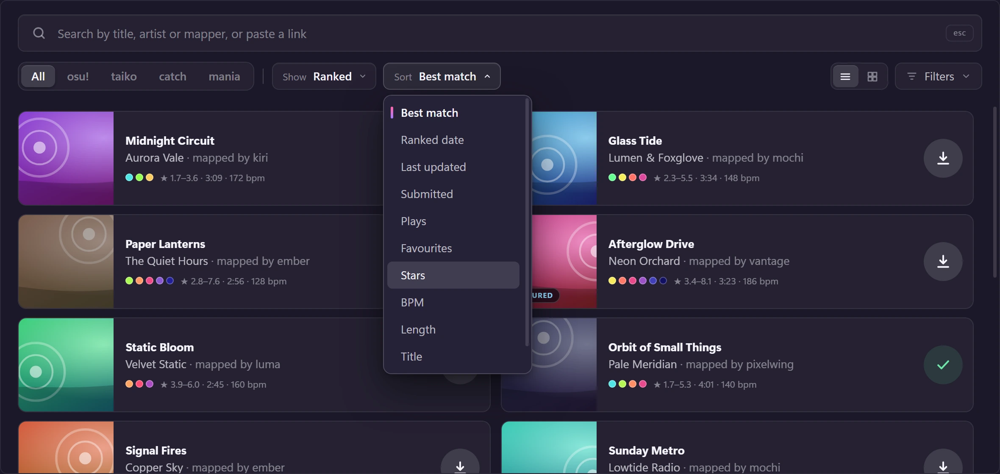
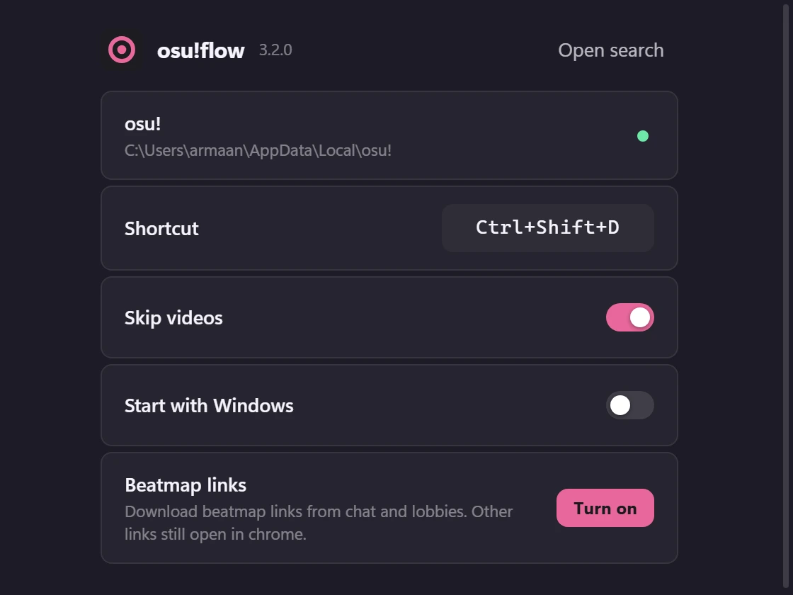

Results before you ask
The first search runs when osu!flow starts, so the card opens with maps already on screen. Going back to a search you just made is instant.
New in 3.1: sliders, a cleaner top bar, and hover-to-download
osu!flow opens a frosted-glass search card right over osu!, finds any ranked, loved or qualified map, downloads it, and hands it to song select. No browser, no alt-tab.

No account to make or sign in to
No telemetry. No ads, no tracking
Tiny installer, lives in the tray
Open source under the MIT licence
osu!flow sits quietly in your system tray until you need it.
In osu!, in a map, anywhere. A glass search card opens over the game, with the first results already waiting. The shortcut is yours to change.
Type a name, paste a beatmap link, or use osu!'s own search syntax. Narrow by genre, language and difficulty, or drag a slider for AR, stars or BPM.
Rest the pointer on a map and press Enter. osu!flow downloads it and hands it to osu! the way double-clicking an .osz would. A moment later it is in song select.
Built for osu! (stable) on Windows, and shaped by how people really search for maps.
The first search runs when osu!flow starts, so the card opens with maps already on screen. Going back to a search you just made is instant.
Stars, AR, CS, OD, HP, BPM and length each get a two-handle slider, always in view at the bottom of the filters. Nothing pops in or moves when you use one.
Difficulty, genre, language, video, storyboard, featured artists, spotlights, hide installed. Applied instantly, remembered next time.
stars>5 ar<=9.5 bpm=180..200 keys=4 mapper=name. Conditions show as chips you can click away, and every one must hold on the same difficulty.
No click needed: rest the pointer (or a pen, on a tablet) on a map and press Enter to download, Space to preview. Typing a search then pressing Enter never grabs a map by accident.
Downloads try catboy.best first, which was several times quicker than osu.direct when we measured, and fall back to osu.direct if a mirror is down.
Maps go in through Windows' own .osz association, exactly like double-clicking the file. It waits for the download to settle and never launches osu! while a dialog is open.
Acrylic glass, rounded corners, Fluent-style menus and a crisp keyboard focus ring. On Windows 10 it falls back to solid colours.
No account, no telemetry, nothing sent anywhere except the mirrors you are downloading from. It never touches osu!'s memory or network.
Rest your pointer on a map below and press Enter. That is the whole workflow: no click, no confirmation, and the map is on its way.
This is a small simulation with invented maps, nothing is downloaded. On a phone, tap the download button instead.
Every screenshot here is the real app, showing invented maps.



osu!flow understands the search syntax from the osu! website and osu!lazer, and the sliders write the same conditions. Combine as many as you like.
stars>5a difficulty above 5 starsar<=9.5 od>8approach rate and overall difficulty (also cs, hp)bpm=180..200a range, whichever way roundlength<3mseconds, m, h or 3:30keys=4mania maps with that many keysmapper="some name"or artist=, title=; quote names with spacesosu.ppy.sh/s/…paste a beatmap link or ID to jump straight to that mapNo. osu!flow is built for osu! (stable), the classic client. It opens over the game window and hands maps over the way stable expects them.
osu!flow is open source, so anyone can read what it does. It never touches osu!'s memory or network, and it imports maps exactly like double-clicking an .osz file. The installer is not code-signed yet, so Windows SmartScreen may say it protects your PC: choose More info, then Run anyway. Every release lists the installer's SHA-256 so you can check your download.
No. There is nothing to sign in to. Maps come from the public beatmap mirrors catboy.best and osu.direct.
The two mirrors above to search and download the maps you ask for, and osu!'s own servers (assets.ppy.sh and b.ppy.sh) for cover images and previews. There is no telemetry and no analytics.
Exclusive fullscreen hides every overlay. In osu!, switch to Borderless or Windowed in Options, Graphics. osu!flow's settings window warns you when it spots exclusive fullscreen.
Anything that needs your osu! account: rank achieved, played or unplayed, your favourites, subscribed mappers, recommended difficulty. The beatmap mirrors don't know those things.
Open Settings from the tray icon, click the shortcut box and press the keys you want. To remove it, use Windows' Installed apps; that also removes the start-with-Windows entry and the link handler if you turned them on.
Free, open source, and about 2 MB to download. It installs for your user only, so no administrator rights are needed.
To verify your download, run Get-FileHash .\osu.flow_*_x64-setup.exe in PowerShell and compare it with the SHA-256 in the release notes.